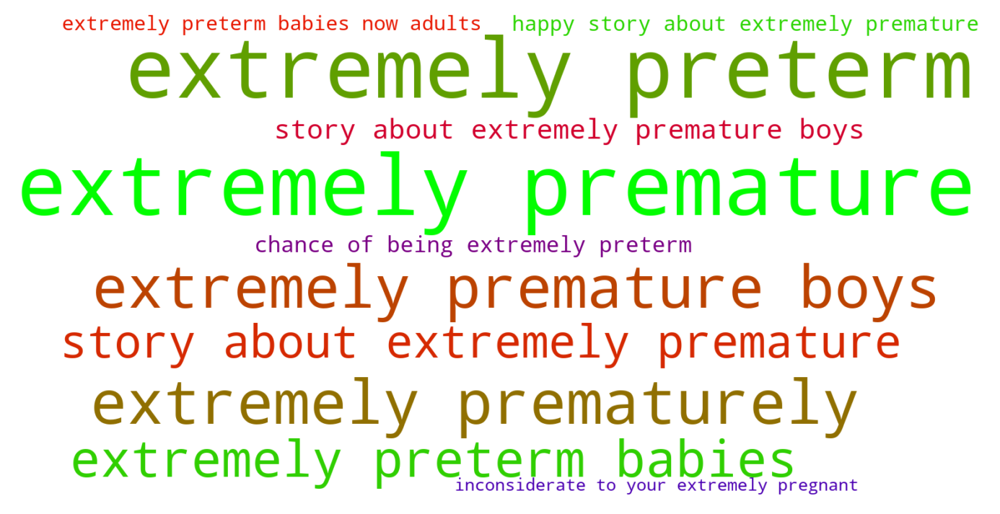

Jump to section:
Samples from Social CorpusHits per UMLS Alias on Social Corpus
Word Cloud Comparison
Embedding Space Comparison
Nearest Neighbors by Semantic Type
Related Analysed Concepts
Samples from Social Corpus
Any extremely preterm babies now adults ...
Confidence: 0.609. Reddit link
I've researched a bit on some of the difficulties extremely premature babies go through growing up etc .
Confidence: 0.849. Reddit link
He said that was inconsiderate not irrational and I pointed out that being so inconsiderate to your extremely pregnant partner is definitely irrational 🙄 .
Confidence: 0.503. Reddit link
Instead she was born extremely prematurely at 24 weeks ...
Confidence: 0.801. Reddit link
I was hoping someone had a happy story about extremely premature boys .
Confidence: 0.642. Reddit link
Triplets have a 15 % chance of being extremely preterm which = high risk of disorders .
Confidence: 0.634. Reddit link
Hits per UMLS Alias on Social Corpus
-
extremely preterm infant
5 hits
-
extremely premature infant
4 hits
-
infant extremely premature
3 hits
-
extremely preterm infants
1 hits
-
premature infants extremely
0 hits
-
infants extremely preterm
0 hits
-
extreme immaturity
0 hits
-
preterm infant extremely
0 hits
-
premature infant extremely
0 hits
-
infant extremely preterm
0 hits
-
extremely premature infants
0 hits
-
infants extremely premature
0 hits
-
preterm infants extremely
0 hits
Word Cloud Comparison
Keywords matching C3494262
Keywords matched against concept. Word size represents frequency.
Keywords co-occurring with C3494262
Co-occurrence is measured at the document-level (i.e. Reddit submissions). Frequencies are normalized to account for keywords common to all CUIs.
Embedding Space Comparison
T-SNE comparison for word embeddings learned from medical domain (EuroPMC) and social media (Reddit) independently.
Pearson correlation for union of closest 1000 neighbors: 0.071
Nearest Neighbors by Semantic Type
Most similar concepts in each of the selected UMLS semantic types. Based on concept embeddings from social corpus.
T100 (Age Group)
-
C3494262
Extremely preterm infant
1.000 Similarity
-
C4048294
Preterm baby
0.788 Similarity
-
C4551581
Full term baby
0.782 Similarity
-
C0021270
Baby
0.684 Similarity
-
C0021289
Newborn
0.672 Similarity
-
C1708505
Infant toddler
0.594 Similarity
-
C0682054
Mature adult
0.516 Similarity
-
C0728836
Young child
0.512 Similarity
T047 (Disease or Syndrome)
-
C0231341
Aging premature
0.793 Similarity
-
C0033036
Atrial premature contractions
0.687 Similarity
-
C0340464
Extrasystoles
0.658 Similarity
-
C0025322
Early menopause
0.644 Similarity
-
C0038644
Sids
0.632 Similarity
-
C0159020
Fits newborn
0.627 Similarity
-
C4704910
Sepsis during pregnancy
0.613 Similarity
-
C0019100
Dengue severe
0.611 Similarity
T046 (Pathologic Function)
-
C0151526
Pre term
0.750 Similarity
-
C0022876
Early labor
0.711 Similarity
-
C0269810
Sepsis during labor
0.644 Similarity
-
C0729264
Preterm premature rupture membrane
0.643 Similarity
-
C0810343
Complications during labor
0.622 Similarity
-
C0021308
Infarct
0.621 Similarity
-
C0015944
Pregnancy prom
0.620 Similarity
-
C0013418
Dystocia
0.614 Similarity
T184 (Sign or Symptom)
-
C3839047
Extremely dry skin
0.749 Similarity
-
C0024031
Lower back pain
0.608 Similarity
-
C0238740
Severe back pain
0.602 Similarity
-
C2735340
Preterm labor symptoms
0.601 Similarity
-
C0231243
Complications early
0.597 Similarity
-
C0034880
Oversensitive hearing
0.593 Similarity
-
C0237326
Dyschezia
0.589 Similarity
-
C0270274
Vomiting newborn
0.587 Similarity
T079 (Temporal Concept)
-
C0231330
Infancy
0.648 Similarity
-
C2964377
Preterm time
0.645 Similarity
-
C0443252
Long term
0.590 Similarity
-
C0016145
First born child
0.574 Similarity
-
C0443303
Short term
0.570 Similarity
-
C0449244
Onset time
0.552 Similarity
-
C1301931
Death time
0.551 Similarity
-
C4025592
Late onset
0.546 Similarity
T074 (Medical Device)
-
C3878817
Bib infant child
0.641 Similarity
-
C0179275
Infant bed
0.594 Similarity
-
C1314747
Bottle nursing
0.543 Similarity
-
C0462877
Oxygen giving set
0.528 Similarity
-
C0085104
System
0.521 Similarity
-
C0183811
Over bed table
0.498 Similarity
-
C0812894
Enteral feeding supplies
0.493 Similarity
-
C3878229
Assistive dining table
0.482 Similarity
T067 (Phenomenon or Process)
-
C0023983
Long term effects
0.617 Similarity
-
C0337240
Fall while being carried
0.553 Similarity
-
C0282165
Environmental impact
0.526 Similarity
-
C2986841
Binding potential
0.524 Similarity
-
C0871732
Environmental stress
0.514 Similarity
-
C0677038
Increase pressure
0.510 Similarity
-
C0870455
Early childhood development
0.504 Similarity
-
C0023670
Events life change
0.476 Similarity
T037 (Injury or Poisoning)
-
C0686721
Baby shaken
0.617 Similarity
-
C0417108
Jump from burning hospital
0.600 Similarity
-
C1959898
Traumatic injury during pregnancy
0.579 Similarity
-
C0005604
Traumatic birth
0.575 Similarity
-
C0269858
Traumatic lesion during delivery
0.574 Similarity
-
C0026771
Wound multiple
0.547 Similarity
-
C0417045
Fall from hospital gurney
0.545 Similarity
-
C0730592
Vulval tear during delivery
0.539 Similarity
T049 (Cell or Molecular Dysfunction)
-
C4725191
Stop lost
0.614 Similarity
-
C0544885
Stop gain
0.543 Similarity
-
C1705285
Mutated
0.479 Similarity
-
C0002938
Aneuploidy
0.435 Similarity
-
C4725190
Start lost
0.432 Similarity
-
C0008625
Chromosomal abnormality
0.426 Similarity
-
C0041107
Trisomy
0.406 Similarity
-
C0008628
Del
0.404 Similarity
T048 (Mental or Behavioral Dysfunction)
-
C0003537
Losing words
0.598 Similarity
-
C0338927
Hospitalism
0.595 Similarity
-
C0036857
Severe mental handicap
0.586 Similarity
-
C0038436
Ptsd
0.584 Similarity
-
C0424295
Hyper
0.556 Similarity
-
C0038441
Stress disorder
0.554 Similarity
-
C0393760
Trouble falling asleep
0.548 Similarity
-
C1306341
Mental disability
0.548 Similarity
T101 (Patient or Disabled Group)
-
C0008098
Child hospitalized
0.591 Similarity
-
C0233363
Monoamniotic twins
0.549 Similarity
-
C0683995
Drug exposed child
0.547 Similarity
-
C0260101
Sick child
0.542 Similarity
-
C0871503
Dying patients
0.531 Similarity
-
C0259916
Disabled child
0.524 Similarity
-
C0682161
Dually diagnosed
0.520 Similarity
-
C0175950
Problem children
0.515 Similarity
T023 (Body Part, Organ, or Organ Component)
-
C0007776
Grey matter
0.589 Similarity
-
C0930593
Bony part hard palate
0.562 Similarity
-
C0013303
Duodenum
0.538 Similarity
-
C0229402
Incus long process
0.531 Similarity
-
C0929301
Mammary glands
0.523 Similarity
-
C0921178
Right frontalis
0.520 Similarity
-
C1268107
Lung part
0.518 Similarity
-
C0227486
Left liver
0.517 Similarity
T032 (Organism Attribute)
-
C0005612
Weight baby
0.588 Similarity
-
C0017504
Gestational age
0.552 Similarity
-
C0751992
Fetal weight
0.526 Similarity
-
C0518035
Children growth
0.519 Similarity
-
C0001779
Age
0.516 Similarity
-
C3714565
Physical condition
0.503 Similarity
-
C0019425
Heterozygous
0.502 Similarity
-
C0805393
Breathing spontaneous
0.502 Similarity
T019 (Congenital Abnormality)
-
C0000768
Birth defect
0.585 Similarity
-
C4551649
Hip dysplasia developmental
0.570 Similarity
-
C0432185
Absent muscles since birth
0.568 Similarity
-
C0013336
Runting
0.558 Similarity
-
C0152021
Congenital heart disease
0.557 Similarity
-
C0332941
Corrected transposition
0.550 Similarity
-
C0149530
Congenital heart block
0.550 Similarity
-
C0018798
Heart defect
0.547 Similarity
T061 (Therapeutic or Preventive Procedure)
-
C0030231
Palliative care
0.577 Similarity
-
C0419040
Reduction oxygen consumption
0.573 Similarity
-
C0582605
Traumatic incident reduction
0.560 Similarity
-
C2317425
Bathing infant
0.560 Similarity
-
C1276380
Advice about taking aspirin
0.558 Similarity
-
C0545508
Pulse taking other
0.553 Similarity
-
C1627881
Taking oral swab
0.553 Similarity
-
C0404370
Delivery after coming head
0.550 Similarity
T201 (Clinical Attribute)
-
C0012655
Predisposition
0.575 Similarity
-
C0429622
Oxygen supply
0.523 Similarity
-
C0566679
Length labor
0.520 Similarity
-
C1997846
Heart rate recovery time
0.520 Similarity
-
C1275644
Reading add
0.516 Similarity
-
C0032930
Trigger
0.515 Similarity
-
C1705488
Ftm
0.515 Similarity
-
C0521982
Successful treatment
0.513 Similarity
T060 (Diagnostic Procedure)
-
C1704567
Still point
0.571 Similarity
-
C0033053
Prenatal diagnoses
0.555 Similarity
-
C4279973
Experience sampling
0.535 Similarity
-
C0489835
Heart study
0.531 Similarity
-
C0596473
Detection early
0.524 Similarity
-
C2599434
Newborn hearing screen
0.519 Similarity
-
C1882082
New diagnosis
0.516 Similarity
-
C0040862
Labor trial
0.507 Similarity
T039 (Physiologic Function)
-
C0205714
Development infant
0.563 Similarity
-
C0035203
Ventilation
0.486 Similarity
-
C0149784
Reaction stress
0.484 Similarity
-
C0282498
Heat responses
0.481 Similarity
-
C2256369
Heart process
0.477 Similarity
-
C0015928
Fetal development
0.470 Similarity
-
C3179159
Sedative effects
0.457 Similarity
-
C0599423
Joint stress
0.449 Similarity
T005 (Virus)
-
C3743464
Mycobacteriophage whirlwind
0.563 Similarity
-
C0205939
Cold virus common
0.553 Similarity
-
C5058350
Fairfax lookout virus
0.542 Similarity
-
C1220459
Hart park group
0.516 Similarity
-
C4433204
King virus
0.512 Similarity
-
C3949524
Mischivirus
0.493 Similarity
-
C3768023
Mycobacteriophage conspiracy
0.489 Similarity
-
C5116712
Bjornvirus
0.471 Similarity
T041 (Mental Process)
-
C0282124
Near death experience
0.554 Similarity
-
C0424157
Fear going crazy
0.552 Similarity
-
C2370884
Emotional regulation
0.540 Similarity
-
C0237722
Emotional maturity
0.520 Similarity
-
C0584925
Out body experience
0.518 Similarity
-
C4279941
Critical thinking
0.514 Similarity
-
C0233455
Emotional immaturity
0.512 Similarity
-
C0001721
Affect
0.511 Similarity
T042 (Organ or Tissue Function)
-
C0032058
Placentation
0.551 Similarity
-
C4244173
Gestational development process
0.534 Similarity
-
C1160388
Respiratory tube development
0.528 Similarity
-
C1749797
Heart development
0.516 Similarity
-
C1656559
Gut development
0.516 Similarity
-
C0042396
Vasospasm
0.515 Similarity
-
C0037271
Aged skin
0.508 Similarity
-
C4250378
Neural induction
0.502 Similarity
T007 (Bacterium)
-
C0995648
Genus quinella
0.543 Similarity
-
C0018154
Gram positive bacteria
0.506 Similarity
-
C0995705
Frankia
0.428 Similarity
-
C0579233
Group b strep
0.419 Similarity
-
C0597134
Flora oral
0.402 Similarity
-
C1015849
Wigglesworthia
0.396 Similarity
-
C0022828
L forms
0.382 Similarity
-
C0036111
Salmonella
0.380 Similarity
T054 (Social Behavior)
-
C0679426
Incompatibility
0.535 Similarity
-
C0282657
Infibulations
0.527 Similarity
-
C0815201
Couple relations
0.519 Similarity
-
C0582101
Talking about dying
0.510 Similarity
-
C4277668
Anti vaccine group
0.507 Similarity
-
C0871858
Pragmatic
0.507 Similarity
-
C0814598
Becoming parents
0.505 Similarity
-
C0686975
Trouble with law
0.496 Similarity
T034 (Laboratory or Test Result)
-
C3898879
Triple positive
0.533 Similarity
-
C0428255
Lead levels
0.517 Similarity
-
C5206315
Nse positive
0.513 Similarity
-
C5206317
Mme positive
0.496 Similarity
-
C0240802
Positive pregnancy test
0.486 Similarity
-
C0019029
Hemoglobin levels
0.481 Similarity
-
C0427777
Pregnancy results tests
0.476 Similarity
-
C0427780
Negative pregnancy test
0.470 Similarity
T200 (Clinical Drug)
-
C3218395
Papain pill
0.532 Similarity
-
C3216620
Progesterone vaginal product
0.480 Similarity
-
C0718788
Baby oil top
0.468 Similarity
-
C1242003
Mol iron tablets
0.451 Similarity
-
C0723917
Triple antibiotic ointment
0.433 Similarity
-
C1247687
Progesterone suppositories vaginal
0.412 Similarity
-
C1247002
Misoprostol oral tablet
0.398 Similarity
-
C0599396
Sleeping pills
0.398 Similarity
T190 (Anatomical Abnormality)
-
C4732742
Hole center heart
0.526 Similarity
-
C3887590
Stricture ureter
0.524 Similarity
-
C0332482
Distortion
0.509 Similarity
-
C1265602
Multiple masses
0.488 Similarity
-
C4025734
Anomaly scalp
0.487 Similarity
-
C0266785
Umbilical cord issue
0.472 Similarity
-
C4024589
Little lower jaw
0.470 Similarity
-
C4021111
Short little toe
0.458 Similarity
T059 (Laboratory Procedure)
-
C0545131
Cbc diff
0.525 Similarity
-
C0023901
Liver tests
0.520 Similarity
-
C0200896
Cytogenetic studies
0.510 Similarity
-
C0368930
Clotting time
0.489 Similarity
-
C0430400
Culture general
0.483 Similarity
-
C0430065
Standard pregnancy test
0.480 Similarity
-
C0026040
Sectionings thin
0.477 Similarity
-
C0005729
Bleeding time
0.472 Similarity
T044 (Molecular Function)
-
C0887940
Gene arrangements
0.521 Similarity
-
C1149397
Heartless ligand
0.467 Similarity
-
C1749457
Ligands activity
0.464 Similarity
-
C1150342
Dopachrome rearranging enzyme
0.435 Similarity
-
C0369768
Oxygen saturation
0.434 Similarity
-
C1721104
Breaks dna
0.428 Similarity
-
C1752422
Wing hair outgrowth
0.427 Similarity
-
C0301647
Strand breaks
0.422 Similarity
T031 (Body Substance)
-
C1446336
Multiple plaques
0.516 Similarity
-
C0007806
Spinal fluid
0.511 Similarity
-
C0225379
Upper respiratory fluid
0.488 Similarity
-
C2983684
All tissues
0.470 Similarity
-
C1549095
Brain cyst fluid
0.466 Similarity
-
C1186705
Regular milk
0.455 Similarity
-
C0392908
Secretion vaginal
0.453 Similarity
-
C0439057
Early morning urine
0.452 Similarity
T018 (Embryonic Structure)
-
C0008508
Chorionic villi
0.488 Similarity
-
C0008503
Chorionic
0.477 Similarity
-
C0553522
Cord placenta umbilical
0.474 Similarity
-
C0553498
Gestational sac
0.471 Similarity
-
C0231024
Neural tube
0.465 Similarity
-
C1278988
Entire placenta
0.462 Similarity
-
C0440731
Fetal brain
0.460 Similarity
-
C0015935
Fetal heart
0.444 Similarity
T195 (Antibiotic)
-
C0003232
Antibiotics
0.439 Similarity
-
C0723285
Septa
0.435 Similarity
-
C0013090
Doxycycline
0.432 Similarity
-
C1564058
Roxi basics
0.428 Similarity
-
C0718575
Antibiotics ear
0.377 Similarity
-
C0310367
Today
0.367 Similarity
-
C0002645
Amoxicillin
0.365 Similarity
-
C0701901
Baypen
0.363 Similarity